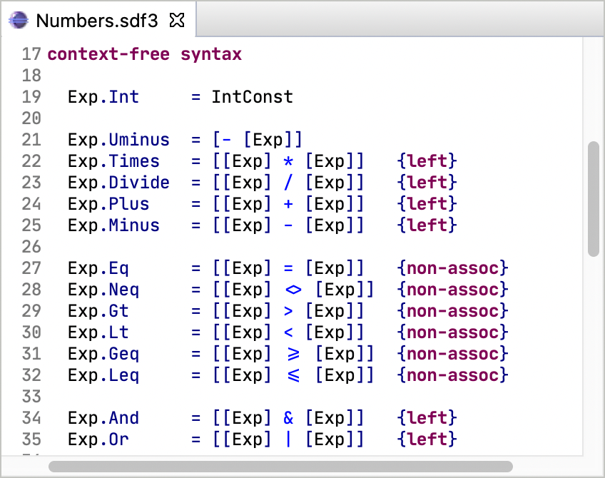

Syntax
Declaratively specify your syntax and pretty-printer using the Syntax Definition Formalism 3 (SDF3) language.

Static Semantics
Use Statix to declare the type system and name binding using scope graphs.

Term Transformations
Write an interpreter or compiler using term transformations in Stratego.
Spoofax Language Workbench¶
Spoofax is a platform for developing textual (domain-specific) programming languages. The platform provides the following ingredients:
- Meta-languages for high-level declarative language definition
- An interactive environment for developing languages using these meta-languages
- Code generators that produces parsers, type checkers, compilers, interpreters, and other tools from language definitions
- Generation of full-featured Eclipse editor plugins from language definitions
- An API for programmatically combining the components of a language implementation
With Spoofax you can focus on the essence of language definition and ignore irrelevant implementation details.
Get started by downloading and installing Spoofax or build it from source.